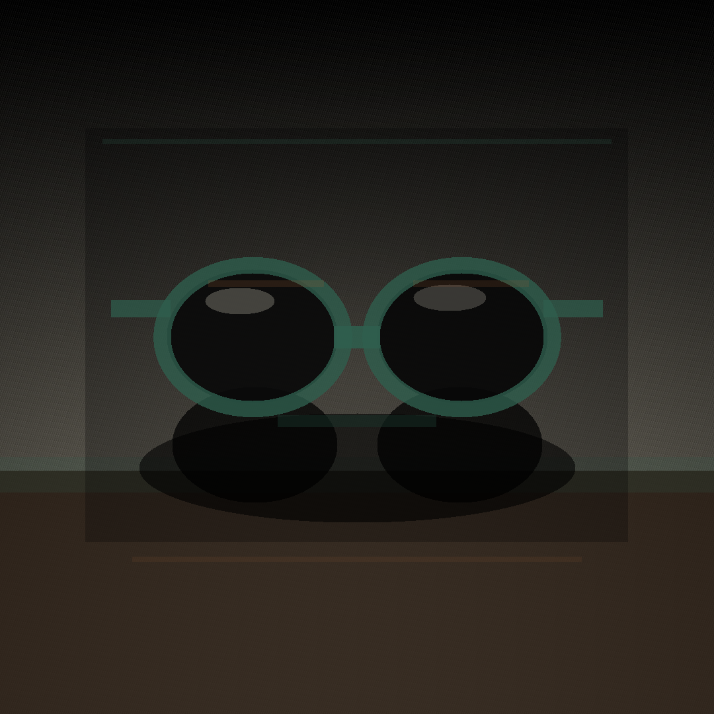

Post 01assets/legacy_optical_noir_post_01.png
ForgeGraph client handoff
Paquete armado desde el prompt operativo, con estrategia, contenido, assets, medición, QA y evidencia de linaje listos para aprobación. No se afirma publicación en vivo: el lanzamiento queda condicionado a aprobación y conectores reales.
Approval checkpoint
Artifact Index
Engagement, whiteboard, asset checksums, source deliverables, and media provenance are archived in manifest.json. The visible handoff keeps internal IDs out of client copy.
No Markdown files included.
Assets



Codex Strategy Brief
Legacy will launch a weekend social package for Legacy Optical Noir, positioned as a sharp, premium, evening-ready sunglasses campaign built around confidence, contrast, and editorial restraint.
ForgeGraph owns the run end-to-end through the Atlas agency pipeline: strategy first, then brand direction, channel planning, CRM alignment, analytics setup, QA, packaging, client approval, and delivery.
No Markdown files will be sent to the client. Client delivery must be a ZIP containing only:
Delivery will be made by WhatsApp to Mike only, with durable receipt and evidence captured.
Create a client-ready weekend launch package that gives Legacy a polished social campaign ready for approval and distribution, without exposing internal working files or production lineage.
Primary goals:
Campaign tone:
Visual direction:
The campaign should feel like a luxury optical drop, not a generic retail sale.
All primary sunglasses visuals must be produced through a Codex-backed media worker using fresh generated assets.
Asset requirements:
Recommended asset set:
Define objective, audience, positioning, campaign constraints, packaging rules, and approval path.
Translate strategy into visual language, tone, composition rules, color treatment, and campaign copy direction.
Prepare social-ready placements for weekend launch use, including feed, story, and optional short-form social packaging.
Align supporting message for owned audience follow-up, if needed, while keeping the weekend launch concise.
Define trackable campaign fields, launch naming, asset manifest metadata, and evidence capture.
Verify all assets and packaged files meet client-safe requirements.
Package final approved materials into the ZIP and route to Mike only.
Before delivery, QA must confirm:
Delivery method:
Suggested WhatsApp message:
> Mike, attached is the Legacy Optical Noir weekend social launch package. The ZIP includes the client-ready HTML, PDF, PNG assets, and manifest for review.
ForgeGraph must retain durable evidence of:
The run is successful when Legacy receives a clean, client-ready launch ZIP through WhatsApp to Mike only, with all assets passing QA and durable evidence retained for the full delivery trail.
Message House
Legacy Optical Noir Message House Source request: Create a client-ready Legacy Optical Noir weekend social launch package. ForgeGraph must own the run end-to-end: department pipeline, strategy before assets, Codex-backed media worker for fresh no-text/no-logo/no-people sunglasses assets, QA, client ZIP with HTML/PDF/PNG/manifest only, WhatsApp delivery to Mike only, and durable receipt/evidence. Do not send Markdown files to clients. Keep WhatsApp brief and concrete. Positioning: lujo usable para CDMX; editorial, sobrio, accesible-premium. Primary CTA: revisar estilos y aprobar piezas antes de publicar. Tone: Spanish-first, concrete, low-hype, confident.
Crm Scripts
WhatsApp / DM scripts Disponibilidad: Te confirmo modelo/color y te comparto alternativas si ya se movió. Precio: Son piezas premium; te ayudo a elegir el par que mejor se vea y más uses. Cierre: ¿Quieres que te aparte este modelo o prefieres ver dos opciones más?
Measurement Plan
Track post saves, replies, profile visits, link clicks, DMs, holds, sold/blocked status, and next action every 24h. Hold live claims until connector evidence exists.
Channel Asset Map
Channel Asset Map
Qa Report
QA Report Media jobs succeeded: 6/6 Client package formats: HTML, PDF, PNG, JSON manifest, ZIP; no Markdown files. Policy: no live publishing claim; approval required before production launch. Decision: ready for review